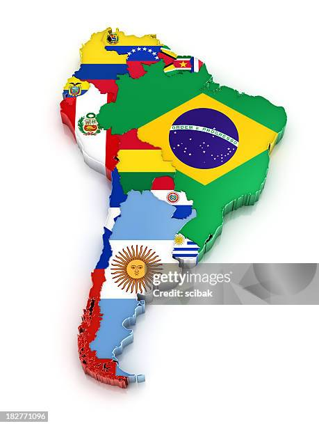

COMPARAÇÃO AMÉRICA DO SUL E ÁFRICA


A América do Sul e a África, apesar de unidas no passado (Pangeia), diferem principalmente pela história
geológica, fauna e indicadores socioeconômicos. A América do Sul tem grande extensão latitudinal e clima
variado, enquanto a África, maior em área, é predominantemente tropical. A África apresenta menor
expectativa de vida, mas maior densidade populacional, enquanto a América do Sul evoluiu com fauna isolada e
possui clima tropical dominante.
Continente Africano

A fauna da África é uma das mais ricas do mundo, com grande diversidade de animais como leões, elefantes
e girafas em ecossistemas como savanas e florestas. Apesar da biodiversidade impressionante, enfrenta
ameaças como caça ilegal e perda de habitat, exigindo ações de preservação.
Continente Sul Americano

A fauna do América do Sul é uma das mais biodiversas do planeta, com espécies como onça-pintada,
arara, capivara e lhama, presentes na Amazônia, nos Andes e no Pantanal.
Essa riqueza natural enfrenta ameaças como desmatamento e queimadas, tornando fundamental a
preservação dos seus ecossistemas.